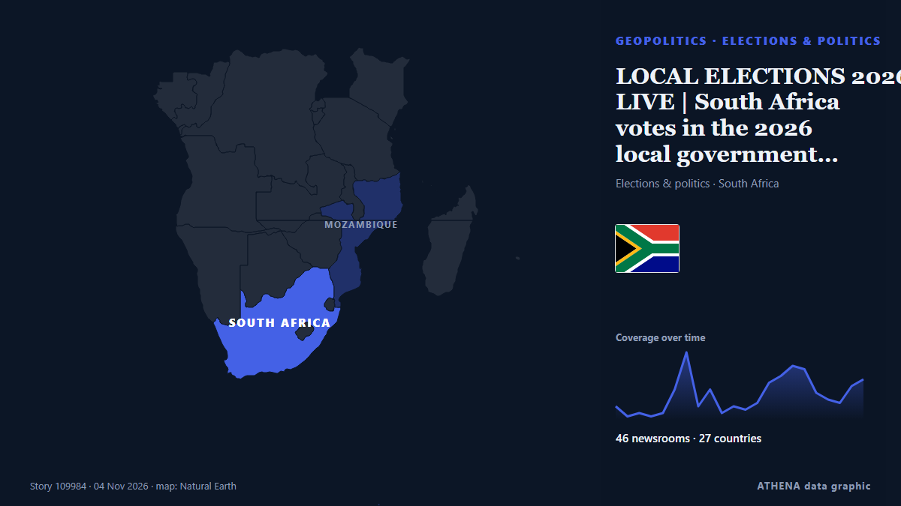

أفريقيا جنوب الصحراء
أفريقيا جنوب الصحراء: أحدث الأحداث دولة بدولة، مع الخطر والمصادر والدول من ATHENA.

الجغرافيا السياسيةLOCAL ELECTIONS 2026: LIVE | South Africa votes in the 2026 local government election
Special voting gets underway on Monday and will continue on Tuesday. من SABC News
4 rescued on third day after Kenya building collapse as families lose hope
The number of people rescued from a collapsed building in Kenya has risen to four, while several others remain missing and are reported to have communicated with loved ones from beneath the rubble. من ABC News (International)
Congo-Kinshasa: Cases Top 10,000 in DR Congo Ebola Outbreak
[DW] DR Congo has reported more than 10,000 Ebola cases and nearly 4,900 deaths. من AllAfrica
Kagame Recieves New South African Envoy To Rwanda
Rwanda and South Africa have taken another step towards normalising relations after President Paul Kagame received the credentials of South Africa’s new High Commissioner to Rwanda, Tinyiko George… من KT Press
Poland's president returns as court crisis escalates
Polish President Karol Nawrocki turned back to Poland while en route to Senegal after a far-right ally was suspended as head of the country's top court. من RTÉ News
Dakar 2026 Youth Olympics opens in historic first for Africa
A Namibian team of 12 athletes will represent the nation at the first ever Youth Olympic Games in Africa, which kick off in Dakar, Senegal, tomorrow. من The Namibian
Attacks kill at least 60 Orthodox Christians in Ethiopia, church says
The Ethiopian Orthodox Church reports that two attacks in Oromia have killed at least 60 Orthodox Christians. من ABC News (International)